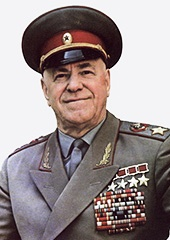

Georgy Konstantinovich Zhukov was a Soviet Red Army officer who became Chief of General Staff, Deputy Commander-in-Chief, Minister of Defence and a member of the Politburo.

During World War II he participated in multiple battles, ultimately commanding the 1st Belorussian Front in the Battle of Berlin, which resulted in the defeat of Nazi Germany, and the end of the War in Europe. In recognition of Zhukov's role in World War II, he was chosen to personally take the German Instrument of Surrender and to inspect the Moscow Victory Parade of 1945.